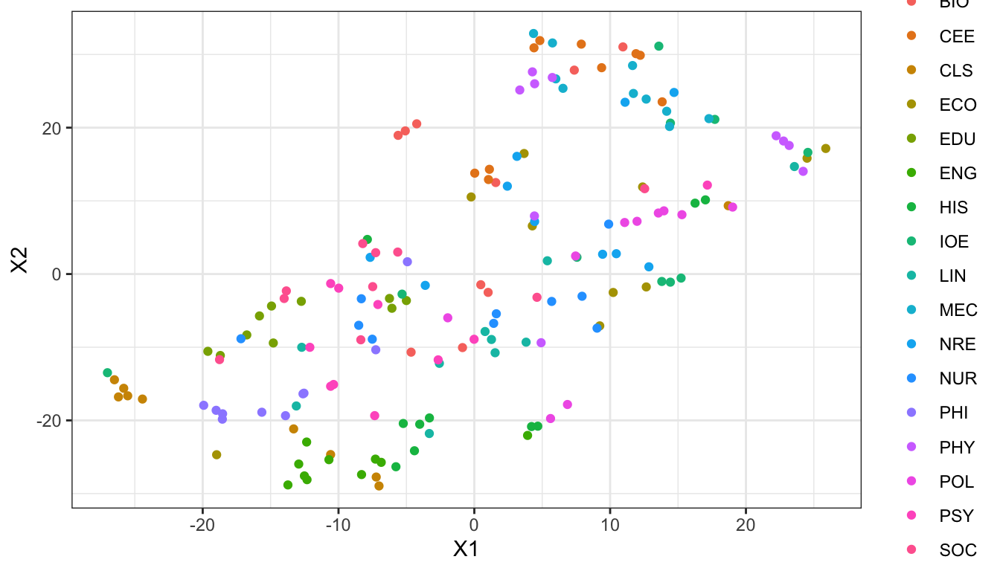

13Introduction to Vector Models and Word Embeddings
This is a quick walk-through tutorial on using vector models. This lab only uses word2vec, which is old but has the advantage of being simple and easy to train. It’s possible to get embeddings from modern large language models, but this requires installing a lot more software (and is much easier in Python).
library(tidyverse)
── Attaching core tidyverse packages ──────────────────────── tidyverse 2.0.0 ──
✔ dplyr 1.1.4 ✔ readr 2.1.5
✔ forcats 1.0.0 ✔ stringr 1.5.2
✔ ggplot2 4.0.0 ✔ tibble 3.3.0
✔ lubridate 1.9.4 ✔ tidyr 1.3.1
✔ purrr 1.1.0
── Conflicts ────────────────────────────────────────── tidyverse_conflicts() ──
✖ dplyr::filter() masks stats::filter()
✖ dplyr::lag() masks stats::lag()
ℹ Use the conflicted package (<http://conflicted.r-lib.org/>) to force all conflicts to become errors
The word2vec package implements the original word2vec training algorithm. Let’s run it on our corpus of Shakespeare plays, extracting specifically the dialogue.
We can see it defaulted to 50-dimensional embeddings. We can do higher dimensions, and large language models usually do, but using those dimensions effectively requires having an enormous training corpus.
We can also get the entire embedding matrix. Using it, we can measure the cosine similarity between words, for instance to find the 10 most similar words to “cat” and “dog”:
embeds <-as.matrix(model)word2vec_similarity(embeds[c("cat", "dog"), ], embeds, top_n =10, type ="cosine")
term1 term2 similarity rank
1 dog dog 1.0000000 1
2 dog devil 0.7710401 2
3 dog fool 0.7596142 3
4 dog rogue 0.7479254 4
5 dog slave 0.7454997 5
6 dog rascal 0.7430351 6
7 dog coward 0.7369859 7
8 dog knave 0.7257963 8
9 dog fox 0.7231458 9
10 dog lion 0.7170312 10
11 cat cat 1.0000000 1
12 cat loathsome 0.7944970 2
13 cat adder 0.7931900 3
14 cat crooked 0.7910794 4
15 cat snake 0.7764300 5
16 cat hoop 0.7742539 6
17 cat agony 0.7705589 7
18 cat river 0.7700824 8
19 cat accent 0.7666846 9
20 cat patch 0.7622123 10
For a more substantive comparison, let’s look at the most similar words to “queen” and “prince” to see how the embeddings capture semantic meaning:
word2vec_similarity(embeds[c("queen", "prince"), ], embeds, top_n =10, type ="cosine")
term1 term2 similarity rank
1 queen queen 1.0000000 1
2 queen katharine 0.7844194 2
3 queen sister 0.7806268 3
4 queen daughter 0.7560874 4
5 queen lady 0.7448757 5
6 queen princess 0.7186794 6
7 queen widow 0.7118343 7
8 queen margaret 0.7017737 8
9 queen kinsman 0.6886260 9
10 queen nurse 0.6884649 10
11 prince prince 1.0000000 1
12 prince gentleman 0.7810150 2
13 prince knight 0.7567070 3
14 prince duke 0.7507963 4
15 prince son 0.7489808 5
16 prince gloucester 0.7360526 6
17 prince warwick 0.7359573 7
18 prince king 0.7339212 8
19 prince gaunt 0.7320203 9
20 prince proteus 0.7317890 10
Shakespeare is fun, but to explore the embeddings of other texts, we should probably create word embeddings based on more modern English. Let’s use the Brown corpus. Training the embeddings is easy if you have the corpus.
Don’t run this code chunk! Instead, skip to the next chunk where we read in the saved embeddings, which you can download from Canvas and save in the same directory as this lab.
Let’s try embedding the essays in MICUSP. The doc2vec() function calculates the average embedding for all words in a document, so we can get a single embedding for the whole document. First we preprocess the text:
We can reduce the 50-dimensional embeddings down to 2 dimensions. A simple way to do this is PCA, but PCA only can do linear combinations of variables. Instead, we’ll try t-SNE, which does nonlinear dimension reduction and can handle more complex structures.
library(ggrepel)ggplot(doc_tsne, aes(x = X1, y = X2, color = subject)) +geom_point() +# geom_text_repel(aes(label = doc_id)) +theme_bw()

Embeddings of MICUSP Mini corpus.
Do you notice patterns? Do subjects group together? In two dimensions any separation will be less stark than in 50 dimensions, but it is still impressive that the embeddings capture this structure.
13.4 Multi-class classification
We can also use the embeddings in a classification task. Here we have 50 variables, 170 documents, and 17 classes. That’s not a lot of data, but perhaps this demonstrates how we’d approach classification in a much larger dataset.
We’ll create a random forest, following our previous lab on random forests. This will take a moment to run:
library(caret)
Loading required package: lattice
Attaching package: 'caret'
The following object is masked from 'package:purrr':
lift
Random Forest
170 samples
50 predictor
17 classes: 'BIO', 'CEE', 'CLS', 'ECO', 'EDU', 'ENG', 'HIS', 'IOE', 'LIN', 'MEC', 'NRE', 'NUR', 'PHI', 'PHY', 'POL', 'PSY', 'SOC'
No pre-processing
Resampling: Bootstrapped (25 reps)
Summary of sample sizes: 170, 170, 170, 170, 170, 170, ...
Resampling results across tuning parameters:
mtry Accuracy Kappa
2 0.3766522 0.3413517
26 0.3482943 0.3111559
50 0.3424216 0.3048238
Accuracy was used to select the optimal model using the largest value.
The final value used for the model was mtry = 2.
Review the accuracy results reported. They are not very high, but how do they compare to simple random guessing?
13.5 Example from the Federalist Papers
Let’s use the embeddings of the Federalist Papers to try to study the authorship problem. First we clean the data and get the embeddings:
Of course, the plot is reducing 50-dimensional space down to 2, so maybe they’d be easier to separate in 50 dimensions. We can test that by fitting a model. First, let’s sample training and test data:
library(glmnet)train_embeddings <- fed_embeddings[train$doc_id, ]train_labels <- train$author_idcv_fit <-cv.glmnet(train_embeddings, train_labels, family ="binomial")
We could print out the non-zero coefficients, but the embeddings are not interpretable, so it’s not very meaningful to know that embeddding 27 is zero and 28 is not.
13.5.1 Create a matrix from the test set and predict author
test_embeddings <- fed_embeddings[test$doc_id, ]lasso_prob <-predict(cv_fit, newx = test_embeddings, type ="response")
Of course, we don’t expect this to match perfectly. Embeddings capture the subject and meaning of the papers, not their writing style, so we’re really using the topics to classify them, not stylometry.
Compare this to your results from the original Federalist Papers lab.